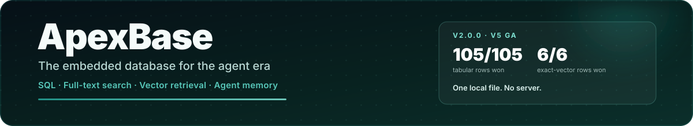

The embedded database for the agent era
Analytical SQL, BM25 full-text search, vector retrieval, and agent memory in
one Rust engine and one local .apex file. No server, no separate
search or vector service, and direct hand-off to Pandas, Polars, and Arrow.
Get started in 5 minutes Build agent memory What's new in 2.0
Start here¶
-
Quickstart
Install the package, create a table, store records, run SQL, and convert the result to a DataFrame.
-
Agent Memory & RAG
Store agent memories with embeddings, fuse BM25 and vector ranking, and expose retrieval as a tool your model can call.
-
What's new in 2.0
The V5 GA release: stable format 5, logical types, bounded execution, streaming results, and safer full-text search.
-
SQL analytics
Joins, CTEs, windows, set operations, aggregations, and DataFrame imports without a warehouse or a server process.
-
Hybrid retrieval
Full-text search, vector TopK, quantized candidate generation, and exact reranking in the same engine as structured data.
-
Database tools
Expose the same files through PostgreSQL Wire and Arrow Flight for psql, BI tools, and Arrow-native consumers.
Why ApexBase¶
| The common local stack | With ApexBase |
|---|---|
| SQLite/DuckDB for tables, FTS5 for text, FAISS or sqlite-vector for embeddings, plus glue to keep them consistent | One MVCC engine with SQL, BM25, and vector columns over the same rows |
| A server process, ports, and credentials for local search or vector retrieval | An embedded library; optional PG Wire and Arrow Flight only when a tool needs them |
| Materialized results that must fit in memory | Bounded operators, out-of-core spill, process admission control, and streaming Arrow batches |
| Re-embedding or re-copying data between systems | In-place updates, one file generation, and typed Arrow/Polars projections |
| A scratch project that stops at a demo | A stable on-disk format, release benchmarks, migration rules, and a documented limitations list |
Quickstart¶
from apexbase import ApexClient
with ApexClient("./agent-memory") as db:
if "memories" not in db.list_tables():
db.execute("""
CREATE TABLE memories (
content TEXT, source TEXT,
created_at TEXT, embedding FLOAT16_VECTOR
)
""")
db.execute("CREATE FTS INDEX ON memories(content)")
db.use_table("memories")
db.store([
{"content": "User prefers dark mode.",
"source": "profile", "created_at": "2026-11-04T09:00:00Z",
"embedding": [0.10, 0.82, 0.20]},
{"content": "Deploys run Fridays at 17:00 UTC.",
"source": "ops", "created_at": "2026-11-04T09:10:00Z",
"embedding": [0.30, 0.40, 0.85]},
])
hits = db.hybrid_search(
[0.28, 0.42, 0.84], "deploy schedule",
k=2, vector_col="embedding", metric="cosine",
)
print(db.retrieve_many([int(i) for i in hits.get_ids()]).to_dict())
The Agent Memory & RAG guide covers tool wrappers, session scoping, forgetting, and memory limits.
import pandas as pd
from apexbase import ApexClient
events = pd.DataFrame({
"event": ["signup", "click", "purchase", "click"],
"value": [0.0, 2.5, 29.9, 1.2],
"day": ["2026-01-01", "2026-01-02", "2026-01-02", "2026-01-03"],
})
with ApexClient(":memory:") as db:
db.from_pandas(events, table_name="events")
print(db.execute("""
SELECT event, COUNT(*) AS n, ROUND(AVG(value), 2) AS avg_value
FROM events GROUP BY event ORDER BY n DESC
""").to_pandas())
Performance at a glance¶
Public baseline: 1M rows, 1M × 128-dim vectors, 2 warmups + 5 timed iterations, median of three same-machine runs on Apple arm64. ApexBase won 105/105 tabular and 6/6 exact-vector comparison rows.
| Metric | ApexBase | Best competitor |
|---|---|---|
COUNT(*) |
0.08 ms | 0.55 ms (DuckDB) |
Filter name = 'user_5000' |
0.19 ms | 1.64 ms (DuckDB) |
GROUP BY + HAVING |
0.68 ms | 3.81 ms (DuckDB) |
| Bulk insert (1M rows) | 246 ms | 1,001 ms (SQLite) |
| Vector TopK cosine | 5.75 ms | 49.5 ms (DuckDB) |
| Vector batch TopK L2 | 50.0 ms | 352.7 ms (DuckDB) |
See Performance for the full scoreboard, 10M-row checks, and reproduction commands.
v2.0.0 highlights¶
-
Stable format 5
Format 5 is fixed for this release line. V5 builds read V4 files;
APEX_WIDTH_FIDELITY=0writes the V4 layout for older readers. -
Logical types
uuid,decimal(p,s), the timestamp family,list<T>, and explicit extension codecs, all with typed Arrow and Polars projection. -
Bounded execution
Per-query budgets, process admission, out-of-core spill, and
execute_stream()keep long-running agents inside a predictable memory ceiling. -
Safer retrieval
FTS generations are reconciled on open, stale indexes are rejected, and hybrid ranking fuses BM25 with vector search natively.
Read the full 2.0 release guide
Documentation map¶
| Layer | Start with | Then |
|---|---|---|
| Getting started | Installation | Quickstart · Core Concepts |
| Build with it | Agent Memory & RAG | Python Client · SQL Guide · Data Import |
| Search and vectors | Full-Text Search | Float16 Vectors · Vector Quantization |
| Expose it | Server Protocols | Rust Embedded API |
| Reference | Python API | Usage Examples · Performance |
| Internals | Storage Architecture | Resource Ownership · Engineering Guidelines |
| History | Release Notes | Docs Index |
Project status¶
ApexBase v2.0.0 is the V5 GA release. The engine is Apache-2.0 licensed, ships prebuilt wheels for Linux, macOS, and Windows, and supports Python 3.9 through 3.13; other platform and architecture combinations build from source. The public benchmark, test suites, and engineering guardrails are part of the repository, so performance and behavior claims are reproducible rather than aspirational.